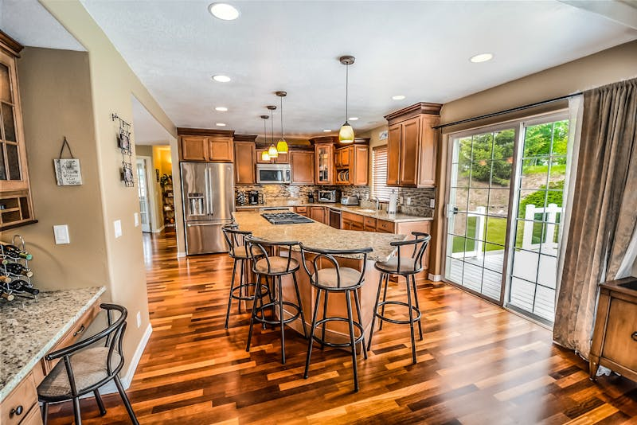

Pourquoi investir dans le neuf pour la location en 2026 ?
L’immobilier neuf présente des atouts décisifs pour l’investissement locatif en 2026. Face à une demande locative soutenue dans les grandes agglomérations et à un parc ancien vieillissant, les logements neufs séduisent de plus en plus les locataires — et donc les investisseurs.
- Performances énergétiques RE2020 : les logements neufs consomment 2 à 4 fois moins d’énergie que les biens anciens, un argument de poids face à la hausse des prix de l’énergie
- Zéro travaux pendant 10 ans : les garanties constructeur (décennale, biennale, GPA) couvrent tous les défauts pendant 1 à 10 ans
- Charges de copropriété réduites : équipements neufs, pas de ravalement ni de toiture à prévoir
- Attractivité locative maximale : les locataires plébiscitent les logements modernes, lumineux et économes en charges
Quels dispositifs fiscaux pour l’investissement locatif neuf en 2026 ?
En 2026, plusieurs dispositifs permettent d’optimiser la fiscalité de votre investissement locatif dans le neuf :
Le statut LMNP (Loueur Meublé Non Professionnel)
Le LMNP reste l’un des mécanismes les plus efficaces pour les investisseurs en 2026. En louant votre bien neuf meublé, vous bénéficiez du régime réel qui permet de déduire l’amortissement du bien (sur 20 à 30 ans), les charges, les intérêts d’emprunt et les frais de gestion. Résultat : une fiscalité quasi nulle sur les revenus locatifs pendant de nombreuses années.
La TVA réduite à 5,5%
Dans les zones éligibles (Quartiers Prioritaires de la Politique de la Ville et périmètres ANRU), les logements neufs bénéficient d’une TVA à 5,5% au lieu de 20%. Pour un investisseur, cette économie de 14,5 points améliore significativement le rendement locatif brut.
Le Déficit Foncier
Pour les investisseurs souhaitant acquérir dans l’ancien réhabilité (BBC ou RT2012), le déficit foncier permet de déduire jusqu’à 10 700 € par an de vos revenus globaux. Une option complémentaire au neuf pour diversifier votre patrimoine.
La gestion locative déléguée : la clé d’un investissement sans stress
Gérer un bien locatif demande du temps et des compétences : sélection des locataires, rédaction du bail, gestion des entrées et sorties, quittances, suivi des impayés, relation avec la copropriété… Pour les investisseurs qui ne souhaitent pas s’y consacrer, la gestion locative déléguée est la solution idéale.
Un gestionnaire locatif professionnel s’occupe de tout :
- ✅ Mise en location : annonces, visites, sélection du dossier locataire
- ✅ Rédaction et signature du bail : en conformité avec la législation en vigueur
- ✅ État des lieux : entrée et sortie avec photos et rapport détaillé
- ✅ Encaissement des loyers et quittances mensuelles
- ✅ Gestion des impayés avec assurance loyers impayés (GLI)
- ✅ Suivi des travaux et relation avec les prestataires
Les honoraires de gestion représentent généralement 6 à 10% des loyers — une dépense déductible fiscalement qui préserve votre tranquillité.

Solution Neuf : votre partenaire pour investir dans le locatif neuf
Chez Solution Neuf, nous accompagnons les investisseurs de A à Z : de la sélection du programme le plus adapté à votre objectif de rendement jusqu’à la mise en gestion locative de votre bien livré.
Notre approche est globale :
- ✅ Analyse de votre situation patrimoniale et définition de la stratégie d’investissement optimale
- ✅ Sélection des programmes à fort potentiel locatif (emplacement, demande, tension du marché)
- ✅ Optimisation fiscale : LMNP, TVA réduite, déficit foncier selon votre profil
- ✅ Montage financier en partenariat avec nos courtiers partenaires
- ✅ Mise en gestion locative avec nos gestionnaires référencés
Nous intervenons sur les marchés les plus porteurs : Toulouse, Bordeaux, Lyon, Nantes, Montpellier, Rennes, Strasbourg, Lille et leurs agglomérations.
Simuler mon investissement locatif →
Publié le 10/04/2026 · Mis à jour le 10/04/2026